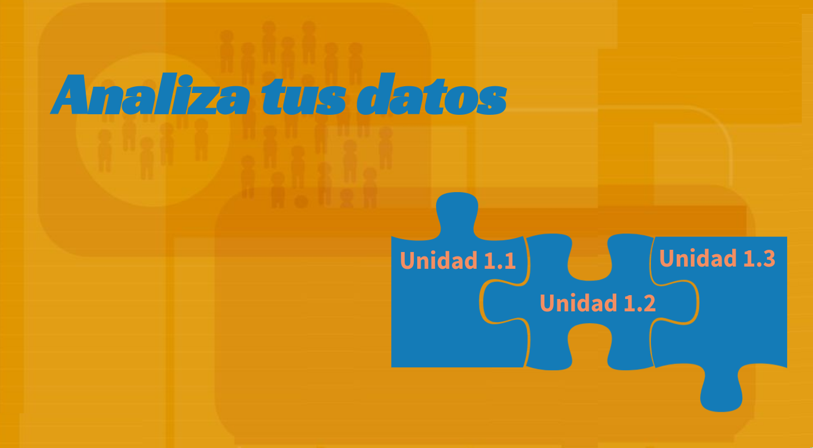
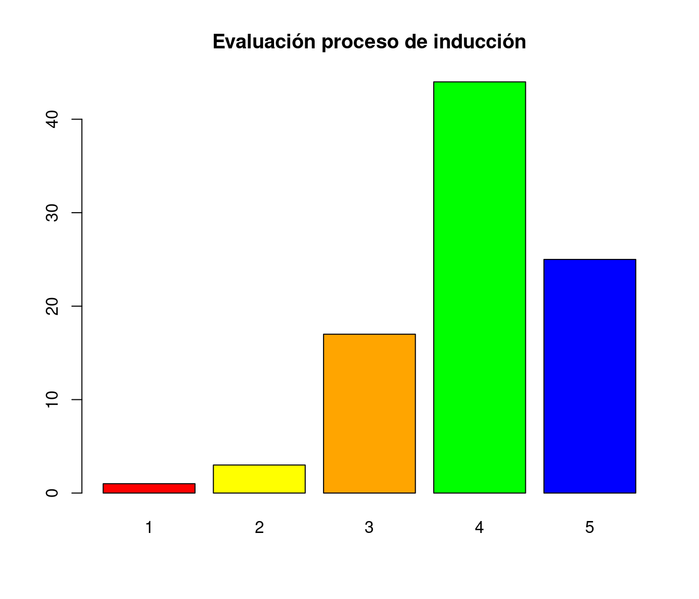
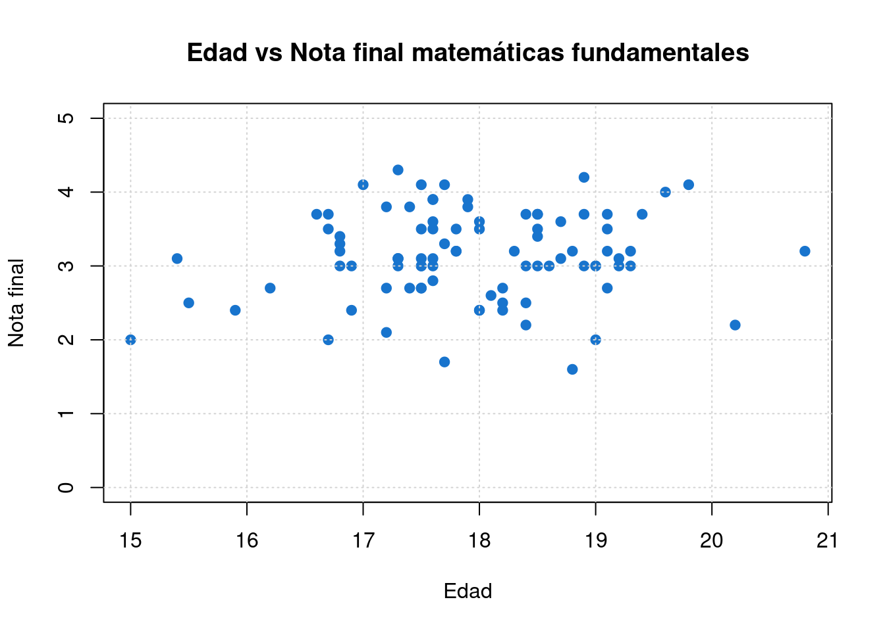

Representación gráfica
Módulo 1- Unidad 1.3
dgonzalez
Guía de aprendizaje 1.3

Introducción
La representación gráfica de información constituye una de las herramientas mas importantes de la estadística. Con ella podemos observar lo ocurrido en el pasado, el presente y lo que podría ocurrir en el futuro y de esta forma orientar nuestras decisiones.
Es necesario realizar una correcta visualización de los datos y para ello requerimos seleccionar la gráfica o representación apropiada, conociendo el tipo de variable, su escala de medición y sobre todo lo que queremos resaltar en ella.
Las gráficas pueden formar parte de un informe en un estudio, para lo cual es necesario conocer los lineamientos exigidos por las normas que los rigen AP, EEE, entre otros. En todos los casos los gráficos deben tener una enumeración que los permita citar, titulo que permita visualizar lo que están representando, fuente, que indique de donde son extraídos los datos que la originan. En esta unidad se trataran las diferentes formas de visualización de datos.
Objetivos de la unidad
Al finalizar la unidad los estudiantes estarán en capacidad de RECONOCER los tipos de gráficos estadísticos y podrán REPRESENTAR e INTERPRETAR información a través de las diferentes formas, que les permita complementar un análisis de datos estadístico.
Duración
La presente unidad será desarrollada durante la tercera semana del semestre ( 7 al 13 de febrero ). Ademas del material suministrado contaran con el acompañamiento del profesor en tres sesiones (Miércoles y Viernes) y de manera asincrónica. Los entregables para esta unidad podrán enviarse a través de la plataforma Brightspace hasta el miércoles 16 de febrero.
Para alcanzar los objetivos planteados se propone realizar las siguientes actividades
Cronograma de trabajo
| Actividad105 | Descripción |
|---|---|
| Trabajo individual | A partir de la base de datos trabajada en las dos unidades anteriores construya un tablero (Dashboard) que contenga gráficos e indicadores estaísticos de las variables contenidas en la base de datos seleccionada en la Actividad 102 de la unidad 1.1. Realice una descripción con los resultados obtenidos en el tablero. |
| Recurso | Código 103.R y TableroM1 |
| Resumen R base | |
| Dashboard en R | |
| Resumen ggplot2 | |
| Resumen RMarkdown | |
| Fecha | 16 de agosto de 2022 |
| Hora | 23:59 hora local |
| Actividad106 | Descripción |
|---|---|
| Trabajo individual | Construya un mapa mental del Módulo 1 a mano que resuma los conceptos más importantes del Modulo 1. genere un archivo pdf para entregarlo en Bs |
| Recurso | Capitulo 1, web del curso, |
| Presentaciones y videos clases | |
| Fecha | 16 de agosto de 2022 |
| Hora | 23:59 hora local |
Criterios de evaluación
Reconocer los principales elementos de un análisis descriptivo de datos y su incidencia en la toma de decisiones.
Reconocer e identificar los diferentes tipos de representaciones gráficas y sus respectivas interpretación.
Utilizar herramientas computacionales para el procesamiento de la información.
Entregables
| Descripción | |
|---|---|
| Entregable 1 | Actividad105.Rmd Tablero Acompañado de descripción de los resultados |
| Entregable 2 | Actividad106.pdf Mapa mental |
| Fecha | Miercoles 16 de febrero de 2022 |
| Hora límite | 23:59 hora local |
Presentaciones
Recursos
Introducción
Una gráfica o una representación gráfica o un gráfico, es un tipo de representación de datos, generalmente cuantitativos, mediante recursos visuales (líneas, vectores, superficies o símbolos), para que se manifieste visualmente la relación matemática o correlación estadística que guardan entre sí.
Wikipedia
Paquetes de R para graficos
R posee una serie de paquetes construido para la visualización de datos que hacen que tengan una excelente presentación. Empezando por funciones del núcleo base, hasta paquetes que elaboran gráficos interactivos


Elegir el gráfico adecuado es muy importante pues existen diferentes alternativos y se debe escoger el apropiado para representar los datos. El tipo de dato determina el tipo de grafico asi:
| Tipo de variable | Escala | Gráfico |
|---|---|---|
| Cualitativas | ||
| Nominal | torta | |
| Ordinal | barras | |
| Cuantitativas | Intervalo-razón | diagrama de tallos y hojas |
| histograma | ||
| diagrama de tallos y hojas | ||
| diagrama de cajas | ||
| diagrama de densidad | ||
| diagrama de puntos | ||
| diagrama de lineas |
Gráficos variables cualitativas con R base
Gráfico de tortas
cc=c(20, 10, 20, 20, 20, 20, 20, 20, 20, 30, 20, 20, 20, 10, 30, 20, 20, 30, 20, 30, 30, 20, 10, 30, 20, 20, 30, 30, 10, 20, 10, 20, 20, 20, 10, 20, 10, 20, 20, 30, 30, 30, 10, 30, 20, 20, 20, 20, 20, 20, 10, 20, 30, 30, 10, 10, 10, 20, 10, 20, 10, 30, 20, 10, 20, 30, 10, 30, 30, 30, 20, 30, 30, 30, 30, 30, 30, 20, 10, 30, 10, 20, 20, 10, 20, 20, 20, 20, 10, 20); labs=c("Ing. Industrial","Administración ","Contaduría "); pct=round(table(cc)/sum(table(cc))*100); labs=paste(labs, pct);labs=paste(labs, "%", sep = " ")
pie(table(cc), labels=labs, main=" Distribución por carrera")Diagrama de barras
ev=table(rbinom(90,5,0.80));
barplot(ev, col=c("red","yellow","orange","green","blue"), main = "Evaluación proceso de inducción")
Diagrama de barras dos variables
counts <- table(mtcars$vs, mtcars$gear); rownames(counts)=c("Montor en linea", "Motor en V")
barplot(counts, main="Numero de cambios adelante por Tipo de motor", xlab="Numero de cambios adelante ",col=c("dodgerblue3","orange"),
legend = rownames(counts))Gráficas variables cuantitativas con R base
Diagrama de árbol
nf=c(4.1, 2.7, 3.1, 3.2, 3.0, 3.2, 2.0, 2.4, 1.6, 3.2, 3.1, 2.6, 2.0, 2.4, 2.8, 3.3, 4.0, 3.4, 3.0, 3.1, 2.7, 2.7, 3.0, 3.8, 3.2, 2.2, 3.5, 3.5, 3.8, 3.5, 3.9, 4.2, 4.3, 3.9, 3.2, 3.5, 3.5, 3.7, 4.1, 3.7, 3.5, 3.6, 3.2, 3.1, 3.4, 3.0, 3.0, 3.0, 2.7, 1.7, 3.6, 2.1, 2.4, 3.0, 3.1, 2.5, 2.5, 3.6, 2.2, 2.4, 3.1, 3.3, 2.7, 3.7, 3.0, 2.7, 3.0, 3.2, 3.1, 2.4, 3.0, 2.7, 2.5, 3.0, 3.0, 3.0, 3.2, 3.1, 3.8, 4.1, 3.7, 3.5, 3.0, 3.7, 3.7, 4.1, 3.7, 3.9, 3.7, 2.0)
stem(nf)
The decimal point is at the |
1 | 67
2 | 00012244444
2 | 555677777778
3 | 0000000000000011111111222222223344
3 | 555555566677777777888999
4 | 0111123Este diagrama ordena los datos de manera que se puede determinar tanto en mínimo (1.6) como el máximo (4.3) , además de visualizar donde están la mayor concentración de ellos.
Histograma
h1=hist(nf, main = "Nota final matemáticas fundamentales", xlab = "nota", ylab="frecuencias absolutas", labels=TRUE, col="dodgerblue3", ylim = c(0,30))
abline(v=3,col="red")
grid()Diagrama de densidad
nf=c(4.1, 2.7, 3.1, 3.2, 3.0, 3.2, 2.0, 2.4, 1.6, 3.2, 3.1, 2.6, 2.0, 2.4, 2.8, 3.3, 4.0, 3.4, 3.0, 3.1, 2.7, 2.7, 3.0, 3.8, 3.2, 2.2, 3.5, 3.5, 3.8, 3.5, 3.9, 4.2, 4.3, 3.9, 3.2, 3.5, 3.5, 3.7, 4.1, 3.7, 3.5, 3.6, 3.2, 3.1, 3.4, 3.0, 3.0, 3.0, 2.7, 1.7, 3.6, 2.1, 2.4, 3.0, 3.1, 2.5, 2.5, 3.6, 2.2, 2.4, 3.1, 3.3, 2.7, 3.7, 3.0, 2.7, 3.0, 3.2, 3.1, 2.4, 3.0, 2.7, 2.5, 3.0, 3.0, 3.0, 3.2, 3.1, 3.8, 4.1, 3.7, 3.5, 3.0, 3.7, 3.7, 4.1, 3.7, 3.9, 3.7, 2.0)
plot(density(nf), main="Distribucion de las notas de matematias fundamentales", col="dodgerblue3")Diagrama de cajas
nf=c(4.1, 2.7, 3.1, 3.2, 3.0, 3.2, 2.0, 2.4, 1.6, 3.2, 3.1, 2.6, 2.0, 2.4, 2.8, 3.3, 4.0, 3.4, 3.0, 3.1, 2.7, 2.7, 3.0, 3.8, 3.2, 2.2, 3.5, 3.5, 3.8, 3.5, 3.9, 4.2, 4.3, 3.9, 3.2, 3.5, 3.5, 3.7, 4.1, 3.7, 3.5, 3.6, 3.2, 3.1, 3.4, 3.0, 3.0, 3.0, 2.7, 1.7, 3.6, 2.1, 2.4, 3.0, 3.1, 2.5, 2.5, 3.6, 2.2, 2.4, 3.1, 3.3, 2.7, 3.7, 3.0, 2.7, 3.0, 3.2, 3.1, 2.4, 3.0, 2.7, 2.5, 3.0, 3.0, 3.0, 3.2, 3.1, 3.8, 4.1, 3.7, 3.5, 3.0, 3.7, 3.7, 4.1, 3.7, 3.9, 3.7, 2.0)
boxplot(nf, main="Nota final matemáticas fundamentales",col="dodgerblue3")
abline(h=3, col="red")Diagrama de cajas
nf=c(4.1, 2.7, 3.1, 3.2, 3.0, 3.2, 2.0, 2.4, 1.6, 3.2, 3.1, 2.6, 2.0, 2.4, 2.8, 3.3, 4.0, 3.4, 3.0, 3.1, 2.7, 2.7, 3.0, 3.8, 3.2, 2.2, 3.5, 3.5, 3.8, 3.5, 3.9, 4.2, 4.3, 3.9, 3.2, 3.5, 3.5, 3.7, 4.1, 3.7, 3.5, 3.6, 3.2, 3.1, 3.4, 3.0, 3.0, 3.0, 2.7, 1.7, 3.6, 2.1, 2.4, 3.0, 3.1, 2.5, 2.5, 3.6, 2.2, 2.4, 3.1, 3.3, 2.7, 3.7, 3.0, 2.7, 3.0, 3.2, 3.1, 2.4, 3.0, 2.7, 2.5, 3.0, 3.0, 3.0, 3.2, 3.1, 3.8, 4.1, 3.7, 3.5, 3.0, 3.7, 3.7, 4.1, 3.7, 3.9, 3.7, 2.0)
cc=c(20, 10, 20, 20, 20, 20, 20, 20, 20, 30, 20, 20, 20, 10, 30, 20, 20, 30, 20, 30, 30, 20, 10, 30, 20, 20, 30, 30, 10, 20, 10, 20, 20, 20, 10, 20, 10, 20, 20, 30, 30, 30, 10, 30, 20, 20, 20, 20, 20, 20, 10, 20, 30, 30, 10, 10, 10, 20, 10, 20, 10, 30, 20, 10, 20, 30, 10, 30, 30, 30, 20, 30, 30, 30, 30, 30, 30, 20, 10, 30, 10, 20, 20, 10, 20, 20, 20, 20, 10, 20)
labs=c("Ing. de Sistemas","Ing. Industrial","Ing. Mecánica")
boxplot((nf~cc),main="Nota final matemáticas fundamentales por carrera",
col="dodgerblue3", names=labs, xlab = "carrera", ylab = "nota")
abline(h=3, col="red"); abline(h=4, col="blue")Diagrama de dispersión
ed=round(rnorm(90,18,1),1)
plot(ed,nf, main="Edad vs Nota final matemáticas fundamentales", ylim = c(0,5), xlab = "Edad", ylab = "Nota final",col="dodgerblue3",pch=19)
grid()
Gráfica de series de tiempo
plot(AirPassengers, main="Numero de pasajeros por mes", col="dodgerblue3", lwd = 2)Resumen
x=rnorm(100,100,20)
y=rnorm(100,100,25)
z=rbinom(100,4,0.30)
t=1:100
par(mfrow=c(2, 2))
pie(table(z))
barplot(table(z))
stem(x)
hist(x)
boxplot(x)
plot(x,y)
plot(t,y, type="l")
plot(density(x))
par(mfrow=c(1, 1))Gráficos con ggplot2

Data: capa de los datos
Aesthetics: capa estética (aes), definimos las variables a utilizar en el gráfico
Geometries: capa de geometrías, se define el tipo de gráfica a realizar
Facets: capa de facetas, permite detallar la gráfica por categorías
Statistics: capa de estadística, permite agregar modelos
Coordinates: capa de coordenadas, permite ajustar las escalas de los ejes
Theme: capas de características del gráfico que no dependen de los datos
Visualizacion de datos con ggplot2
library(readr)
library(ggplot2)
clasificacion=read.csv("data/spi_global_rankings_intl.csv")
ggplot(clasificacion, aes(x=off , y=def))
ggplot(clasificacion, aes(x=off , y=def))+
geom_point()
ggplot(clasificacion, aes(x=off , y=def))+
geom_point()
| geo_point() | geom_bar() | geom_col() | stat_count() |
| geom_boxplot() | stat_boxplot() | geom_density() | stat_density() |
| geom_histogram() | geom_violin() |
ggplot(clasificacion, aes(x=off , y=def))+
geom_point()+
facet_wrap(~ confed)
ggplot(clasificacion, aes(x=off , y=def))+ geom_point()+
facet_wrap(~ confed)+ stat_smooth(method = "loess" , formula =y ~ x)
ggplot(clasificacion, aes(x=off , y=def))+ geom_point()+ facet_wrap(~ confed)+ stat_smooth(method = "loess" , formula =y ~ x)+
coord_cartesian(ylim = c(0, 10))library(ggplot2)
data=data.frame(grupo=c("BIO","CIV","SIS","ELE","MEC"),frecuencia=c(13,13,18,8,15))
ggplot(data, aes(x=grupo, y=frecuencia)) +
geom_bar(stat="identity", fill="steelblue")+
geom_text(aes(label=frecuencia), vjust=2.6, color="white", size=3.5)+
theme_minimal()library(ggplot2)
ggplot(mtcars, aes(x=mpg, y=wt, colour = cyl)) +
geom_point()ggplot(iris, aes(Sepal.Length)) +
geom_histogram(bins = 7,fill="#69b3a2", color="#e9ecef", alpha=0.9)+
theme_minimal() +
labs(x = "cm", y = "frecuencia absoluta") +
ggtitle("Longitud del sepalo")library(ggplot2)
ggplot(bpe, aes(x=promedio, y=grup)) +
geom_boxplot(fill="#313ae8", # color de relleno
color="#bf6f2e", # color de lineas
alpha=0.5)+
geom_point(color="#b431e8",alpha=0.9) # Colour pickerGraficos con highcharter
https://jkunst.com/highcharter/
https://rstudio-pubs-static.s3.amazonaws.com/320413_6ab300527e8548b1a3cbd0d4c6200fcc.html
Graficos con Shiny
RMarkdown
R flexdashboard - ejemplo
R flexdashboard - implementaciòn
background-image: url(“img/pujcali.jpeg”)
Una imagen dice mas que mil palabras…
Daniel Enrique González Gómez
Imagen tomada de :https://javerianacali.edu.co/noticias/la-javeriana-bogota-y-cali-1-de-colombia